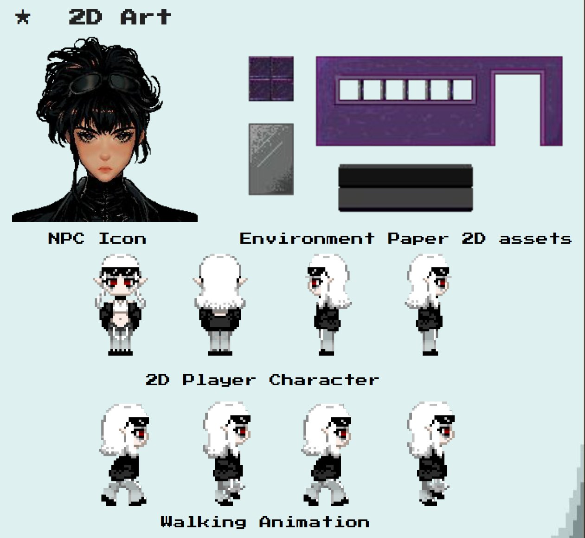
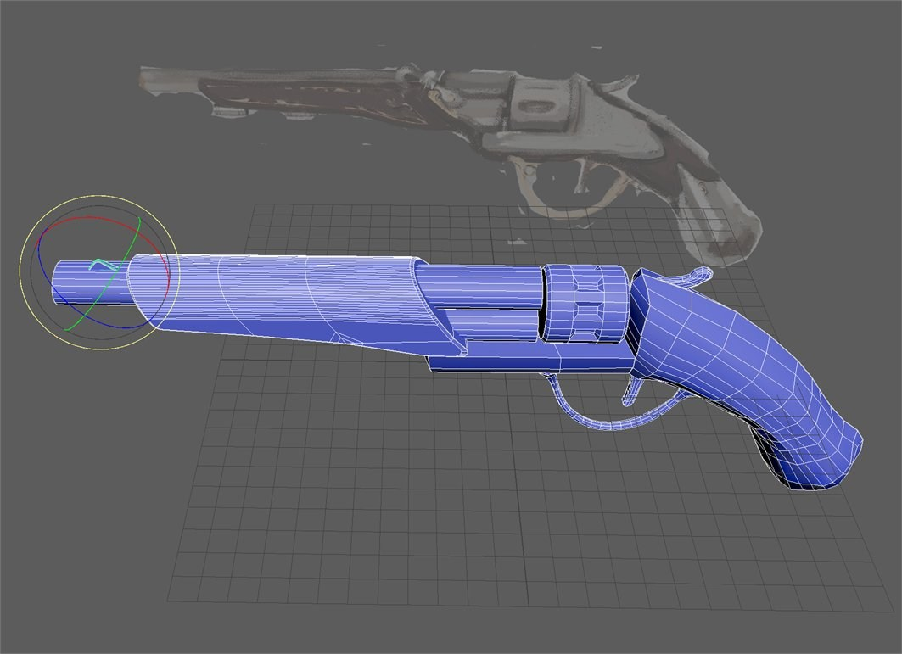

Part three
Stills
Original character, concept, interface and environment art, shown one at a time. Select a work to view it at full size.




Three dimensions




Part three
Original character, concept, interface and environment art, shown one at a time. Select a work to view it at full size.

